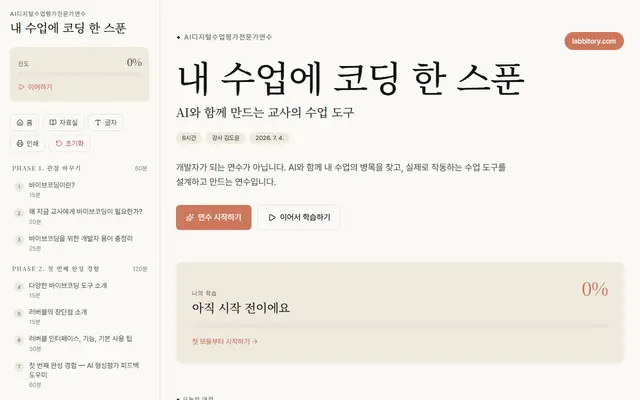
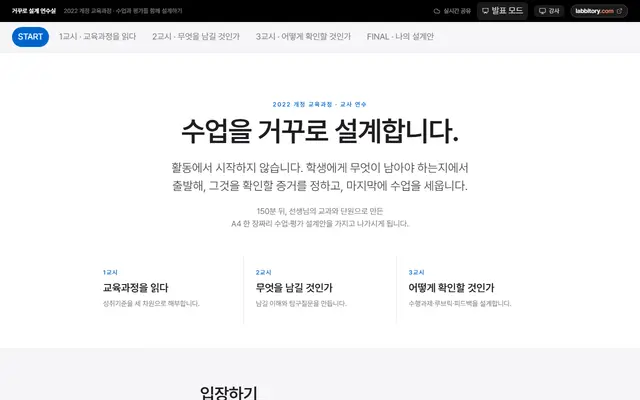
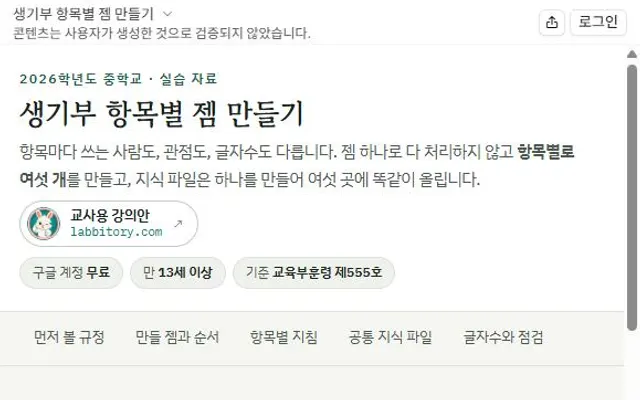
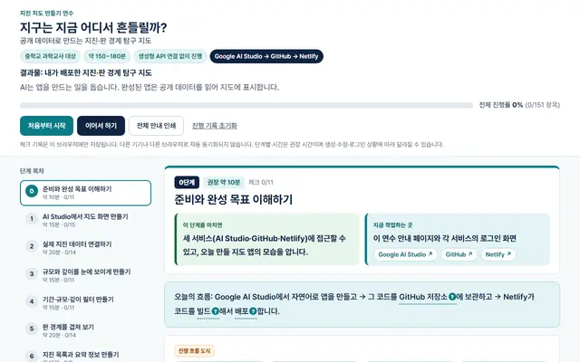
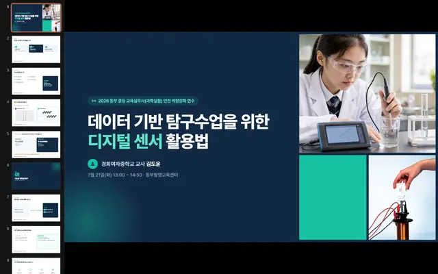
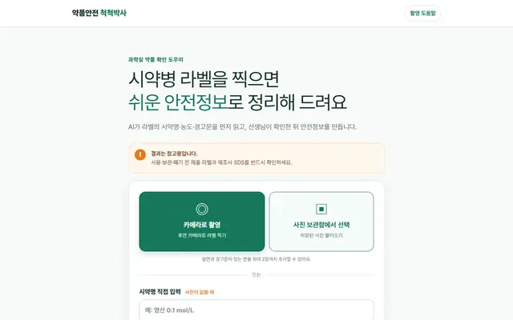
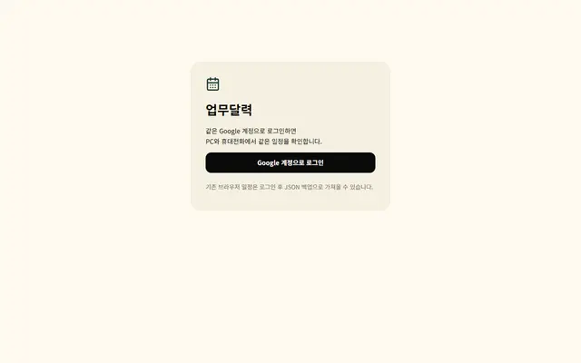

교사와 함께
선생님과 함께하는 연수
마음에 드는 내용을 눌러 바로 시작해 보세요.

내 수업에 코딩 한 스푼(러버블)
내 수업의 문제를 정의하고 PRD를 써서, 생성형 AI와 함께 실제로 작동하는 수업 도구를 만들어 보는 바이브코딩 실습형 연수 포털이에요.

거꾸로 설계 연수실
성취기준 → 이해 → 질문 → 평가 → 수업 → 피드백 순서로 따라가며, 연수가 끝나면 A4 한 장짜리 단원 수업·평가 설계안이 완성돼요.

생기부 특기사항 젬(GEM) 만들기
생기부 항목마다 Gemini 젬을 따로 만들고 공통 지식 파일을 함께 올리는 실습이에요. 관찰 기록을 다듬는 윤문 보조 도구로 쓰도록 기재요령 규정부터 짚어요.
서울 고교 지도 만들기
학교알리미 공시자료와 Google 지도를 잇는 「서울 고교 지도」 웹앱을 Google AI 스튜디오로 만들고, Netlify에 배포하기까지 단계별로 따라가요.

지구는 지금 어디서 흔들릴까?
USGS 실시간 지진 자료와 판 경계 자료로 지진·판 경계 탐구 지도를 만들어요. Google AI Studio로 앱을 만들고 GitHub에 올린 뒤 Netlify로 배포하기까지 단계별로 따라가는 과학교사 연수예요.

데이터 기반 탐구수업을 위한 디지털 센서 활용법
과학실험 교육실무사 안전 역량강화 연수에서 쓰는 강의 슬라이드예요. 디지털 센서로 데이터 기반 탐구수업을 준비하는 방법을 다뤄요.

약품안전 척척박사
시약병 라벨을 찍으면 AI가 라벨을 읽고, 확인을 거친 뒤 위험·보호구·보관·혼합 금지·응급조치·폐기 안내를 쉬운 말로 정리해 줘요.
우리반 출결노트
매일의 출결 상황을 깔끔하게 정리해 생기부 출결을 손쉽게 입력하고, 출결 서류를 내지 않은 학생에게는 바로 메시지를 보내 챙겨요.

업무달력
일정과 준비할 일을 한곳에 모으는 개인 업무달력이에요. Google 계정으로 로그인하면 PC와 휴대전화에서 같은 일정을 볼 수 있어요.